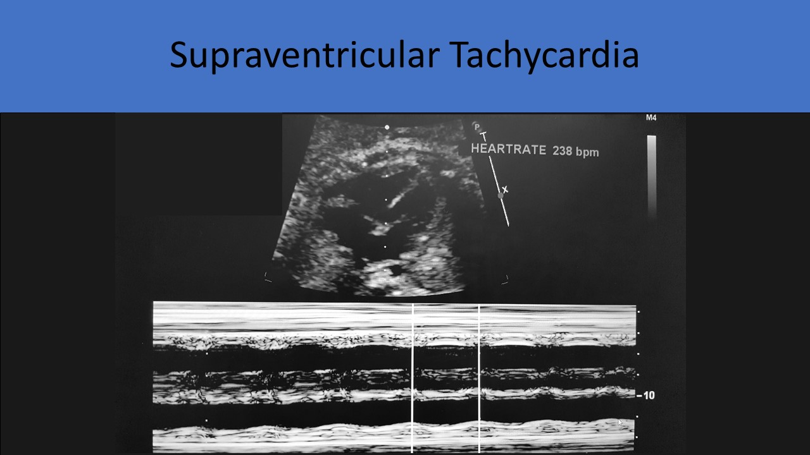

.jpg)
Fetal Arrhythmia
General Information:
- The conduction system of the heart is functionally complete by 16 weeks gestation
- SA node is the pacemaker of the heart and is normally located in the right atrial wall
- Electrical signal travels across the atrium through the bundle of His to the AV node
- The signal then enters the ventricles through the bundle branches and Purkinje fibers
- Normal heart rate: 100-180 bpm
- Arrhythmia refers to irregular rhythm, rate <100bpm and rate >180 bpm
- Fetal arrhythmia is the most common fetal symptom that causes a referral for an echocardiogram
- Evaluated by M-mode, color flow encoded M-mode, and pulsed Doppler
- Tissue Doppler is an emerging technology that some have used to assess fetal rhythm
- M-mode:
- High temporal resolution
- Limited by maternal habitus, fetal position and polyhydramnios/oligohydramnios
- Place the m-mode cursor across the atrium and the ventricle simultaneously
- Pulsed wave Doppler tracing:
- Not usually limited by fetal position and image quality
- Method 1
- Use the five chamber view or long axis view of the left ventricle
- The Doppler cursor is placed in the area of mitral-aortic fibrous continuity, below the aortic valve
- An increased sample volume size is preferred to obtain inflow and outflow velocities for the left ventricle
- Increased sweep speed is helpful when measuring the fetal heart rate and PR interval
- Method 2
- A large sample volume can also be placed over the ascending aorta and SVC (or the pulmonary vein and branch pulmonary artery or the descending aorta and IVC)
- Obtain a sagittal view of the fetal chest that demonstrates the SVC and IVC entering the heart; increase Doppler sample size to include the ascending aorta and SVC

Premature Atrial Contraction:
- Most common irregular rhythm
- Common and benign in infants and children
- Abnormal early P wave followed by normal QRS in electrocardiogram
- P wave occurs early, impulse blocked at AV node
- Causes variation in the PR interval
- May initiate sustained tachycardia and SVT
- Associated with a redundant foraminal flap, maternal smoking and caffeine ingestion

- Premature ventricular beat not preceded by a premature atrial beat
- Frequent in older children and adolescent
- Single beat is benign
- Can lead to manifestation of cardiomyopathy, myocarditis
- Sustained fetal ventricular heart rate greater than 180 bpm
- Associated with maternal infection, fever, drug ingestion, hyperthyroidism
- Associated with fetal hypoxia and fetal anemia
- Can cause signs of congestive heart failure
- Most common type: supraventricular tachycardia
- Fetal tachycardia management
- delivery is the preferred method of treating a fetus; must establish fetal lung maturity first
- if delivery is not an option medication is recommended; Digoxin(preferred), Sotalol (beat blocker), Flecainide (second choice, when Digoxin failed)
- Sinus tachycardia
- equal atrial and ventricular rate between 180 to 200 bpm
- 1:1 AV conduction, associated with maternal infection, fever, drug ingestion, hyperthyroidism, fetal hypoxia and fetal anemia
- Supraventricular tachycardia (SVT)
- 1:1 atrioventricular conduction, heart rate is usually between 210-260
- several impulses originate above the AV node
- consistent SVT is associated with poor outcomes and non-immune hydrops
- treatment can include transplacental administration of Digoxin, Flecainide, or Sotalol
- Amiodarone is preferred to treat a fetus with SVT that has developed into hydrops

Supraventricular tachycardia
Supraventricular tachycardia with moderate tricuspid regurgitation
- Atrial flutter
- a rapid irregular atrial rate between 300 to 600 with variable ventricular rate between 200 to 400
- 2:1 atrioventricular conduction block ( sometimes 3:1)
- typically ventricular rate will be slower than atrial rate secondary to variable AV block
- occurs in later gestational ages
Atrial flutter with 2:1 conduction (atrial rate: ventricular rate=369:185)
Atrial flutter with 2:1 conduction
- Ventricular tachycardia
- rare condition
- ventricular rate is more than 180 bpm with normal atrial rate
- associated with myocarditis
- long QT syndrome
- atrial rate is usually slower than ventricular rate
- Fetal heart rate is less than 100 bpm
- Sinus bradycardia- sustained sinus bradycardia between 100 to 110 bpm, associated with sinus node dysfunction, long QT syndrome, heterotaxy syndrome, 1:1 AV conduction with slow atrial rate
- Heart rate <80bpm may cause fetal hypoxia
- Congenital complete heart block
- inflammation and injury to the myocardium and cardiac conduction system
- electrical impulse is stopped at the AV node
- associated with maternal connective tissue disorder(maternal lupus, anti Ro/SSA, anti-La/SSB) or structural congenital heart disease
- occurs in the 2nd or 3rd trimester
- 2nd degree heart block initiates 3rd degree heart block
- evaluated in any view that allows for simultaneous assessment of the atrial and ventricular rate
Congenital complete heart block with cardiomegaly: The atrial rate is faster than the ventricular rate and there is also a small pericardial effusion around the right atrium in this patient
Mechanical PR Interval:
- Includes the left ventricular isovolumic contraction
- Can be measured with mechanical PR interval of SVC and Aorta ( best view-sagittal view, the sample volume of PW is placed between SVC and ascending aorta)
- Can also be measured at the region of the mitral and aortic valve ( apical five chamber view, the sample volume of PW is placed between mitral valve and LVOT to pick up both flow patterns)
- Correlates with gestational age
- A faster sweep speed can help to perform a more accurate measurement
- Normal value is 95-145ms
- If it is more than 145ms, the presence of the first degree atrioventricular block should be suspected
- Produces actual cardiogram signals (not structural motion like m-mode)
- Can provide precise measurements of atrioventricular and ventriculoarterial intervals
- Limited due to availability of equipment